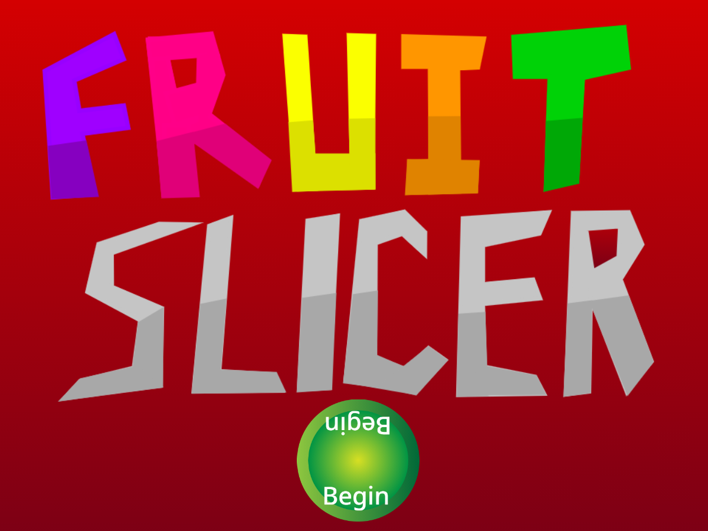

I am a Game Programmer!!!!
By Mr. Goldstein
This year, we learned how to program by creating a lot of game programs in Scratch. We made a Cat Double Jump, a Daleks game, a Rainbow Lines program, an Asteroids game and a Fruit Slicer game. --Thank you Al Sweigart for teaching us how to program!--
The Cat Double Jump
The Cat Double Jump was the first game we coded. We learned how to program:
- Keypresses
- Gravity
- Jumping
- Double Jumping
- Wraparounds
- Backdrop changes
The Daleks game
The second game we programmed was called Daleks. In the Daleks game, we learned to program:
- A teleport mechanism that transports the Cat to a random location on the Stage. There's a cool down period of five seconds before the Cat can be teleported again.
- A shield that protects the Cat for one second. It that has a cool down period of ten seconds before the shield can be used again.
- A game over screen that doubles as a start screen.
Rainbow Lines
We created a Rainbow Lines program that:
- Created beautiful patterns of Rainbow Lines
- Allowed the player to use variable sliders to select the thickness of the line, the color, and the degree of transparency.
Asteroids
We created an Asteroids game program. We learned how to code:
- Clones
- Spaceship velocity
- Broadcast and Receive messages that coordinate game activity between sprites
- A scoreboard
- Asteroid velocity and rotation
- A game over screen
The Fruit Slicer game program:
This was the final game program we created. We programmed:
- The tracking of cursor locations using lists.
- A Fruit Slicer that the player can use to slice fruit as they are tossed up in the air.
- A display of Health that decreases as fruit is missed and falls to the ground.
- A keypress that allows the player to recover their Health before they lose all of it and the game ends.
- A cloud variable that keeps track of the high score among all players.

I learned a lot about programming by coding games in Scratch. I hope you enjoyed playing them!